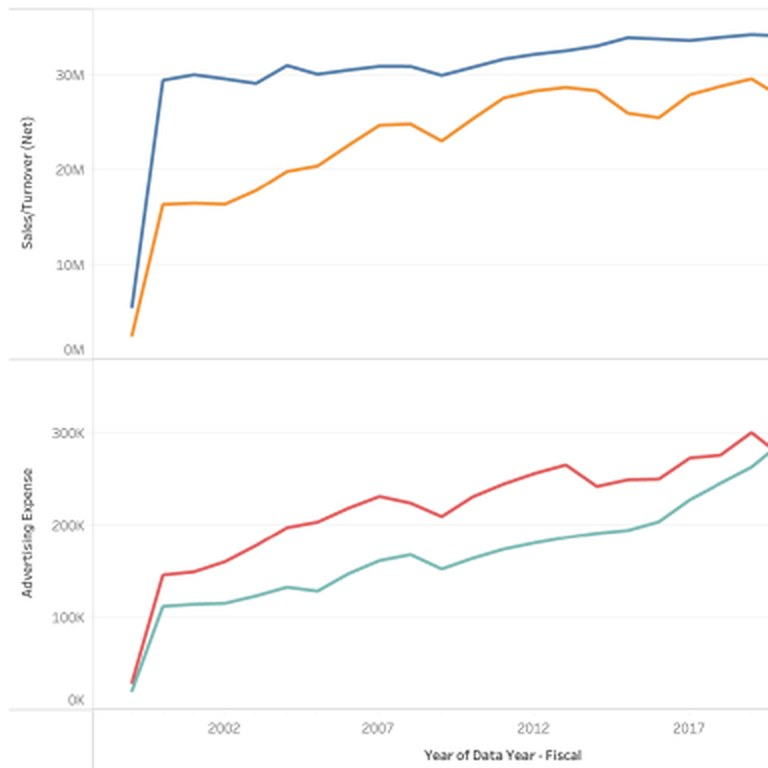
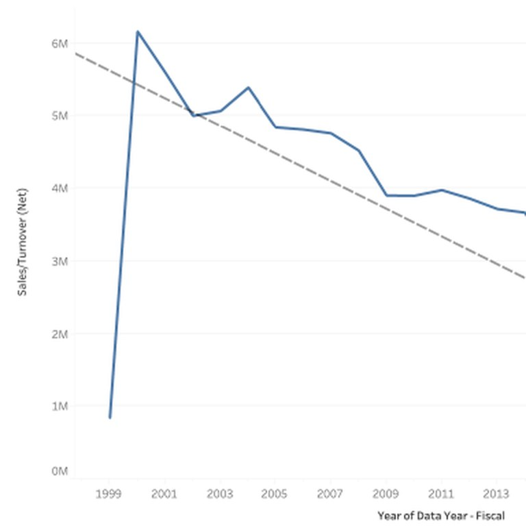
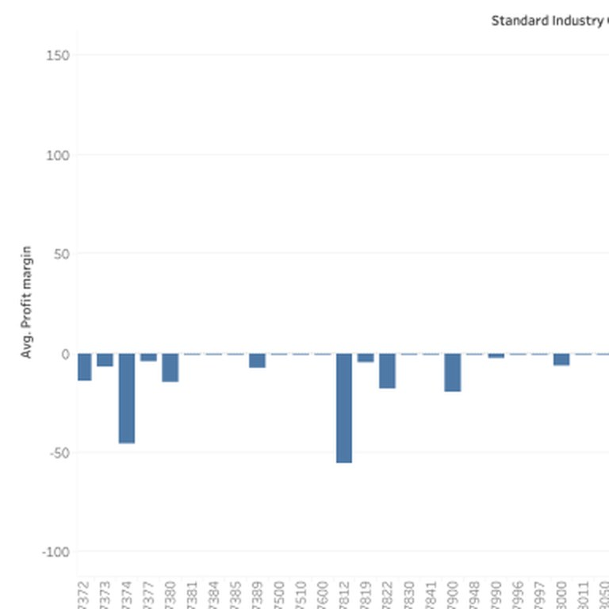
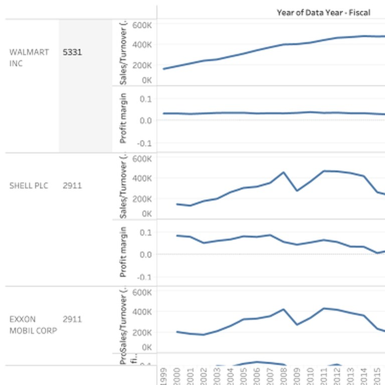
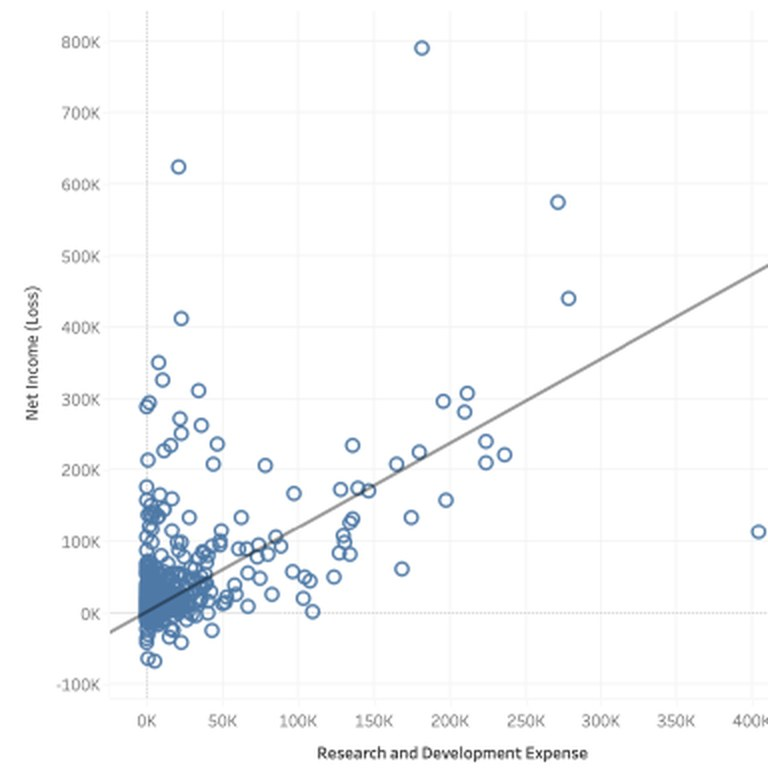
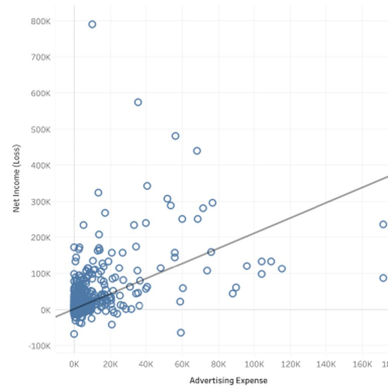
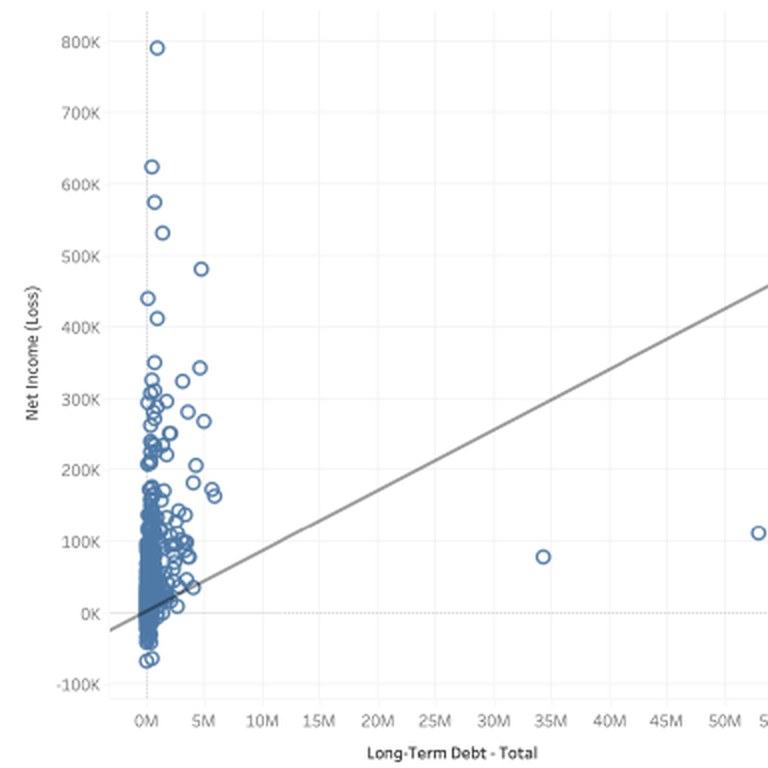
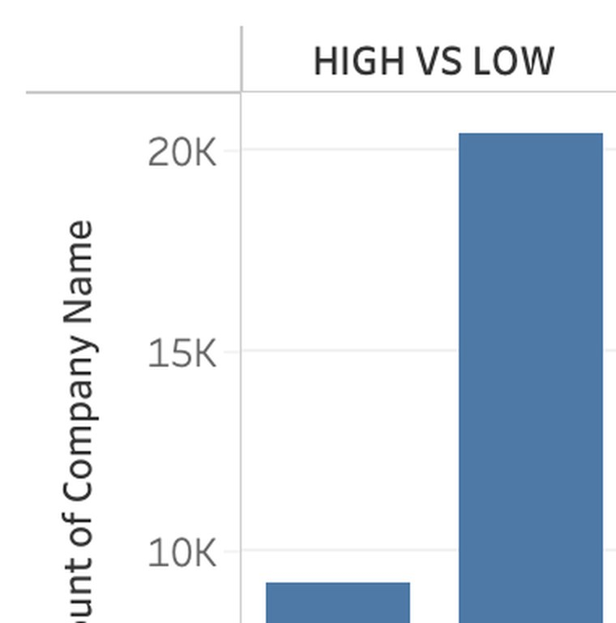

Companies spend heavily on advertising and R&D. The question was what that spending is tied to (sales, profit, both or neither) and how the picture changes by industry.
Using a dataset of company financials from 2000 to 2023, I built a Tableau storyboard: sales, advertising and R&D trends by industry code, average profit margin by industry, high vs low sales companies, the top companies by sales each year, and scatter plots of net income against R&D, advertising and long term debt with trend lines.
A storyboard that moves from trends to industry differences to profit drivers. In the scatter plots, net income trends upward with both R&D and advertising spend. These are thumbnails exported from my Tableau workbook.







